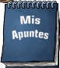
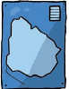
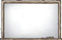

Fuente: el manual de estudio
En la escuela circulan diversos recursos para estudiar.
Explica para qué utilizas cada uno de los que aparecen ilustrados.




Los manuales generalmente se organizan por áreas de estudio: ciencias naturales, ciencias sociales, lengua, matemática y otras más.